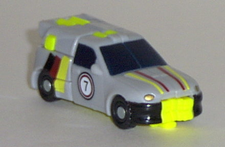
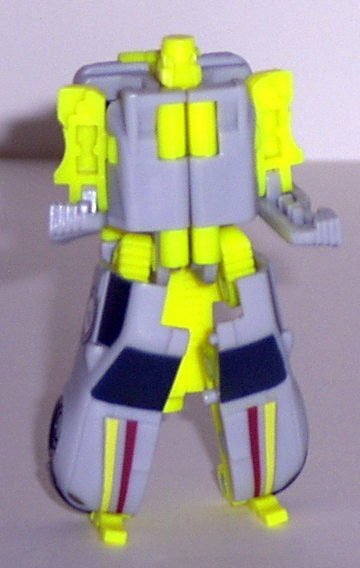
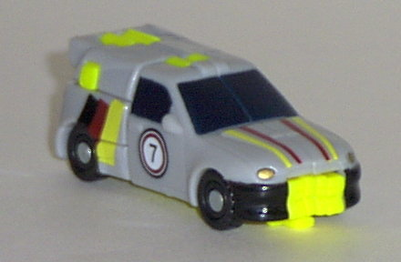
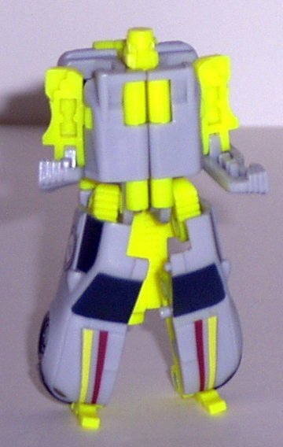
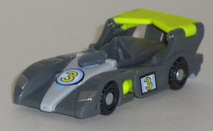
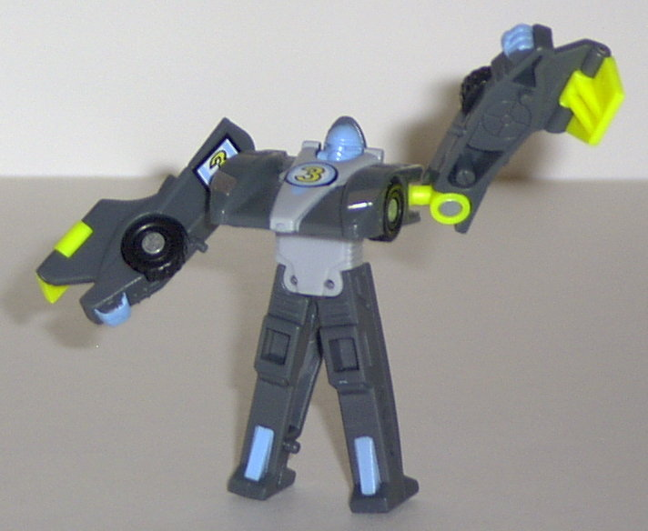
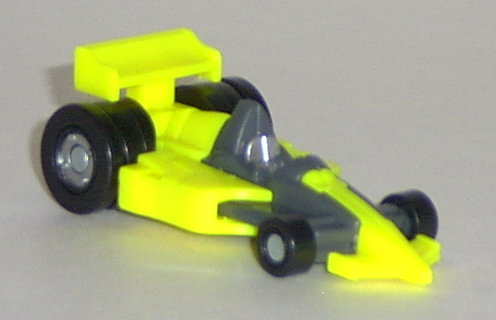
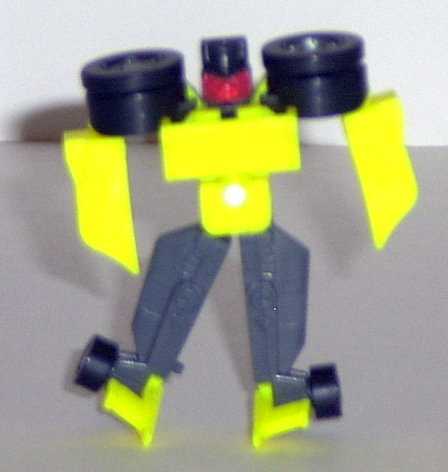
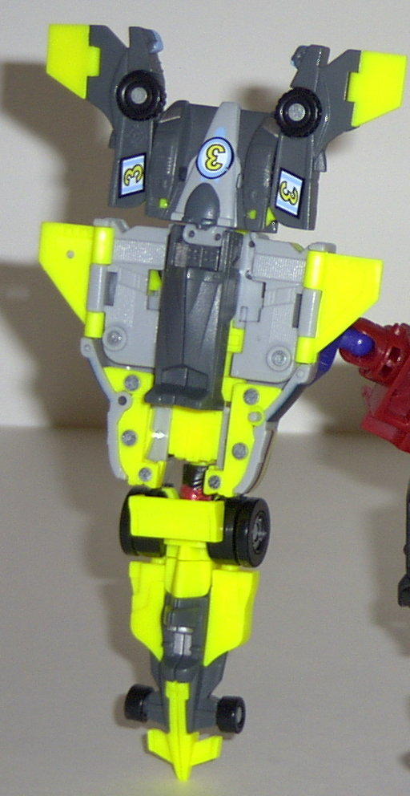

Dirt
Boss
Dirt
Boss
 
Difficulty of Transformation : Very Easy
Color Scheme : Light gray, flat yellow, black, dark sparkly blue, and some white, gold, and brick red
Individual Rating : 7.0
Race
Team
Allegiance
: Minicon
Size
: Mini-Con (3-pack)
Team Gimmick
: Ability to combine
into the
Skyboom
jet/shield
Overall Rating
: 4.7
Dirt
Boss


Difficulty of Transformation
: Very
Easy
Color Scheme
: Light gray, flat yellow,
black, dark sparkly blue, and some white, gold, and brick red
Individual Rating
: 7.0
Vehicle mode is an off-road
rally vehicle. This vehicle mode is VERY nice, with excellent paint detailing.
The multi-colored stripes and the "7" markings on the sides are nice touches.
The mold detailing is a bit lacking, but I suppose that's to give it a
"sleek" look. My only real complaint about this mode is that the yellow
plastic kinda looks odd just sticking out here and there. So I don't think
yellow is a very appropriate color for this particular figure. (Although
it should be noted that the yellow is not nearly as day-glo as it appears
in the above pictures; for some reason, that's just the way they came out,
and I have no idea why.) The Minicon port is on the bottom center, slightly
to the front of the vehicle. The Minicon symbol is on the left side of
the vehicle, right behind the window.
Dirt Boss' (Man, I love
that name!) robot mode is pretty nice, but suffers from a few flaws. For
one, his arms have little useful articulation- his upper arms only swing
halfway out from the body and have no other movement, while his lower arms
can only move up and down, with no side-to-side movement. Which basically
limits him to a "grr, I'm gonna punch you" pose with his hands. His legs
have nice articulation, but due to his construction (the panels on the
sides of his legs and the large yellow panel stretching down the backside
from his body), it's restricted a little. His yellow plastic could also
use some paint detailing- ESPECIALLY on his face, since the features on
it are hard to make out without some. Still, the overall aesthetic and
look of this mode is pleasing.
An excellent vehicle
mode, and a pretty nice robot mode, even if the movement is restricted
a little. But grrr, that yellow... Still my favorite of the Race Team,
though.
Downshift


Difficulty of Transformation
: Very
Easy
Color Scheme
: Dark gray, flat yellow,
light gray, "baby" blue, and some black and silver
Individual Rating
: 3.9
Vehicle mode is an Indy
race car. This mode is very good, with good detailing all around- both
paint-wise and mold-wise. The "3" symbols are also a good "official race
car" touch. No real extras in this mode whatsoever, and there's no eye-catching
odd parts either. The Minicon symbol is on left side, right behind the
"3" symbol, and the Minicon port is on the bottom, near the front of the
race car.
Robot mode is absolutely
horrid. The proportions are completely, totally wonky, and he just looks
stupid. His arms are way too long, like gorilla arms- and although they
have two points of shoulder articulation, there's no elbow articulation,
so they look stiff, as well. The chest sticks out ridiculously far from
the actual head, which is waaay back there. (Although the head would look
cool, if it wasn't just baby-blue in coloration.) The legs don't look too
bad, but their movement is pathetic- just slight side-to-side movement,
and there's nothing to stop you from moving them too far to the side and
snapping them off. Gee, that's nice...
An excellent vehicle
mode, but I don't know what the toy engineers were smoking when they came
up with that robot mode. Eeeww.
Mirage


Difficulty of Transformation
: Very
Easy
Color Scheme
: Flat yellow, dark
gray, black, and some silver and red
Individual Rating
: 3.7
Vehicle mode is an F-1
race car, and... heeeey, he kinda looks familiar... isn't this
Swindle
?
Well, sorta. Then why isn't Beastbot just doing a partial review, if it's
just a repaint or remold? Well, truth be told, it's not technically a repaint.
Not is even a remold. A "remold" would imply that only some of the parts
were remolded, but Mirage is technically an entirely new toy- in fact,
the only parts he shares in common with Swindle are the wheels. Every other
part is, at least aesthetically, different. However, the overall design
and transformation are just the same as Swindle's. See, originally, Mirage
here was supposed to be a completely different Transformer, but because
of budget/time problems, they just decided to take Swindle's transformation
scheme and look and apply it to a different toy. Unfortunately, they picked
SWINDLE, one of the crudiest of all the Minicons. Just like Swindle, Mirage's
vehicle mode is nice, but lacks some paint detailing- only the driver's
seat, rear wheels, and the robot head (which, sadly, is even more visible
here than on the Swindle mode) are painted. I'm not fond of the colors,
either- too much yellow. This is one area where Swindle beats out Mirage.
Noticeable changes to the mode include a smaller front bumper, a taller
driver's seat, and a square (rather than slanted) rear... fin thingy. The
barely-visible Minicon symbol is on the left side of the vehicle mode,
on the front of the yellow part. The Minicon port is on the bottom rear
of the race car.
The robot mode is pretty
bad, just like Swindle's. Only side-to-side arm and leg movement. But-
what's this? Mirage has waist articulation as well! (In fact, his transformation
involves swiveling the waist.) It's a nice addition, but not very useful,
considering the odd articulation in the first place. Oh, and the big head
doesn't help the look much, either.
Mirage improves in some
way on Swindle's mold- the extra waist articulation and more paint detailing-
but he has a bad color scheme and a big head. Eh.
Skyboom
(Gestalt Form)

Difficulty of Transformation
: Easy
Color Scheme
: Flat yellow, light
gray, dark gray, black, and some "baby" blue, silver, red, brick red, dark
sparkly blue, and gold
Individual Rating
: 4.0
By combining Dirt Boss,
Mirage, and Downshift, you get the Skyboom shield/jet. Basically, the only
difference between the two is that the shield involves using Dirt Boss'
head as a peg to insert into a bigger robot's hand to hold, whereas the
jet does not. Now, onto the actual toy: My first thought is too much yellow.
Ick. My second thought is, hey, there's a race car hanging off the bottom
of this shield. And Mirage's head couldn't possibly be more apparent. My
last thought is that, if it wasn't for all the visible bolts and clashing
of colors on the upper part of the shield, it would be kind of nice. And
although Downshift and Dirt Boss fit together pretty well, Mirage falls
off the bottom too easily. And although it makes a somewhat kinda sorta
convincing shield, the "jet" is completely bogus. It's a race car with
a bunch of crud on its back! Some jet.
Skyboom's "shield" mode
would be so-so, if it wasn't for the clash of colors and the obvious half-hearted
tacking on of Mirage on the bottom. But the jet has no redeeming features
whatsoever.
The Race Team is one of the worst Minicon Teams, in my opinion. Although all three have nice alternate modes, Downshift and Mirage's robot modes are some of the worst I've ever seen. Only Dirt Boss remains a solid figure out of the bunch. The Street Action Team is the only team I like less.
Review by Beastbot